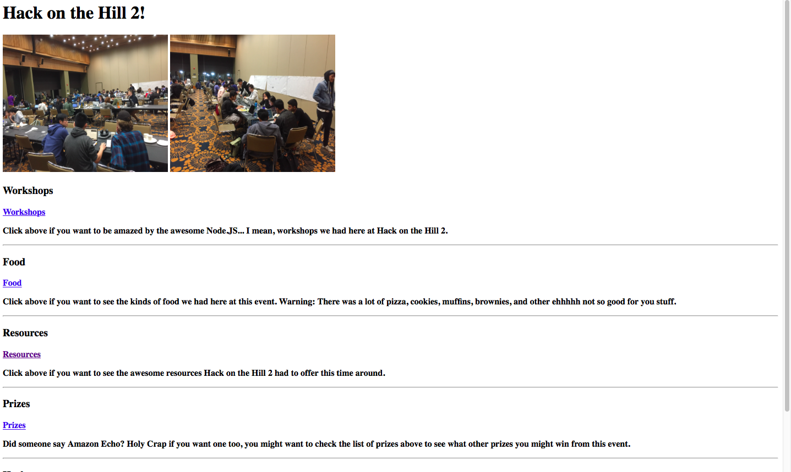
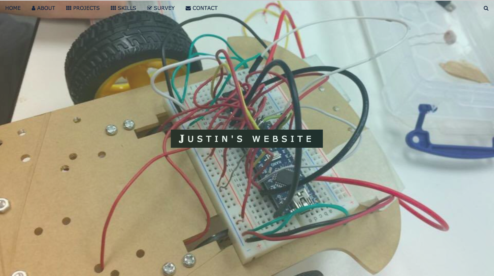

MY WORK
Here are some of my recent projects. Click on the images to enlarge and read the captions.
![Physical Therapy Weight Lifting Tracker. This project focused on using this 9 DOF (Degrees of Freedom) sensor, which has an accelerometer, gyroscope, (and irrelevant to this project, the magnetometer) in the x,y,z-axis, an intel edison, and an online machine learning API, and was done during an engineering seminar class at UCLA with 2 other teammates. In order to create a device that can detect proper measurements of bicep curls, shoulder presses, and random motions accurately, there must first be a data collection stage and a data parsing stage (using CSV data sheets to train the device using a machine learning algorithm). This data collection stage required going to the gym to obtain accurate values by actually strapping on that device and having the sensor pick up on relevant acceleration and rotation values, then recording the data for the algorithm to determine a set of motions. We can do this by SSH into the edison while at the gym and actually conducting tests of the motions, using around 50 test runs to get a more precise set of values for each motion. A link to the powerpoint presentation for this project can be found on the link (part of list) above.](physicaltherapy.jpg)

![IEEE OPS Final Project. This project (hardware aspect) focused on using the arduino nano as the primary microcontroller, a L239D H Bridge for motor control, a 9V Battery to power the motors, and the internal 5V from the arduino to read IR values and send commands to the motors. The parts were mostly made from Eagle CAD PCB design, and soldered on, and served as an introduction to Micromouse projects. The primary task for this project was to solve a simple maze using PID (software aspect) which stands for proportional integral derivative controller, which uses negative feedback systems and constantly calculates in a periodic manner, the total error, total change in error, and attempts to stabilize the error in each instance to a range where error is too minimal for the car. Additionally, there was also the concept of PWM (pulse width modulation) that required certain parts like the motor to be connected to certain digital pins that allow analog write (analog pins only allow analog read, and most digital pins only allow digital read/ digital write. You can refer to an arduino data sheet for this information) More details can be found in the link (part of list) above.](ops.jpg)
![EE3 final project. This project was very similar to the IEEE OPS Final Project. However, it was more of a NatCar style project. It also focused (hardware aspect) on using L239D H Bridge for motor control, 9V battery to power motors, arduino nano as primary microcontroller, but used breadboards instead to read and interpret IR Values, and added an LED and Halls Effect Sensor to detect magnets (light up LED if a magnet is detected). It also used PID (software aspect) and PWM (read the OPS project caption for information on that). More information about the details can be found in the link (part of list) above.](ee3ckt.png)

If you want to go back home, follow this link: HOME Descriptions
This is a list of all of my recent relevant projects I've worked on. NOTE: Below on the list are links to the project or pages/relevant information. Simply click on the text to reach another link that discusses the particular project. HERE
Here are some of my recent projects. Click on the images to enlarge and read the captions.